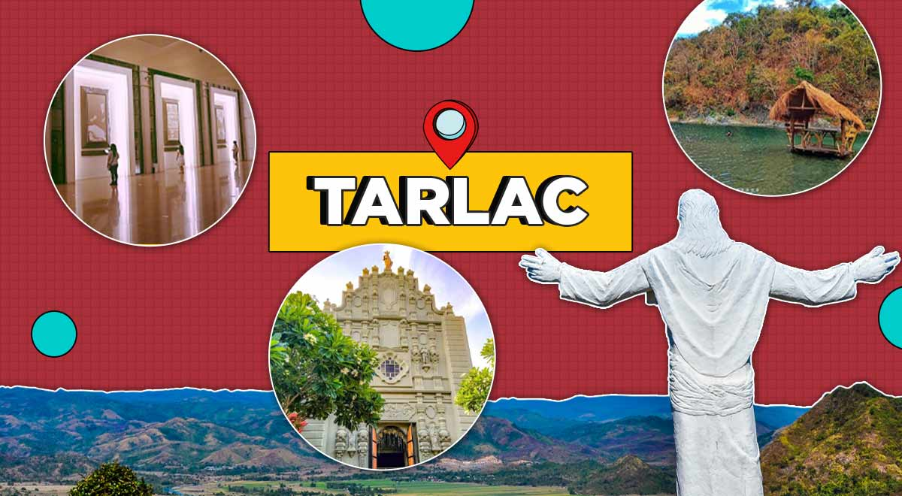

about tarlac
The name “Tarlac” is a Hispanized derivation of the Aeta word for a “talahib-like” weed called “Malatarlak.” The Aetas lived in the western mountain regions of what is now the municipality of Bamban. Tarlac Province was the last province organized in Central Luzon in 1874 by the Spaniards.
